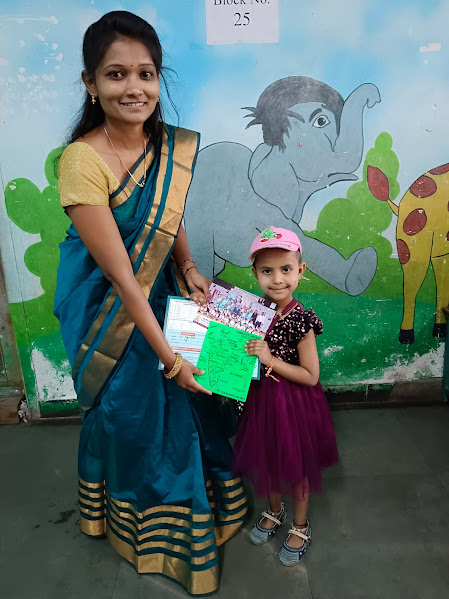
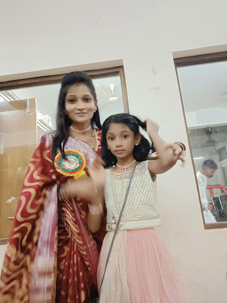
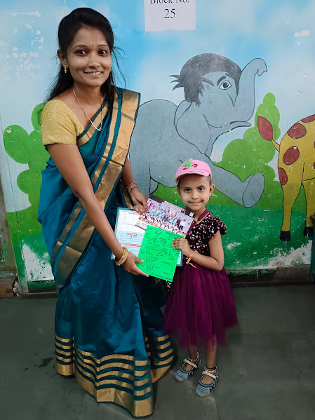
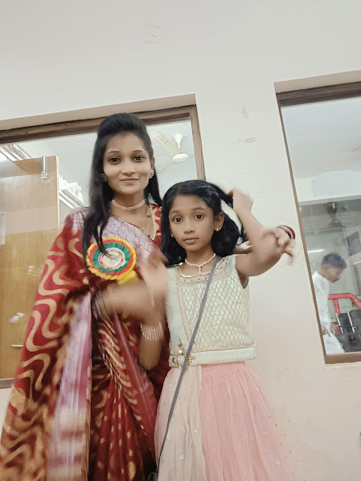

"As a teacher, I am dedicated to fostering a nurturing learning environment where students feel empowered to explore, question, and grow. My goal is not just to impart knowledge, but to inspire a lifelong love for learning and critical thinking. I believe in tailoring my approach to meet the diverse needs of my students and in fostering a sense of curiosity and creativity in the classroom. Through collaboration, encouragement, and support, I aim to guide my students on their journey to academic success and personal fulfillment."
In my teaching career, I've had the privilege of working with students from various backgrounds and abilities. I've taught in both traditional classroom settings and online environments, adapting my methods to suit the needs of each group. Through this experience, I've learned the importance of flexibility, patience, and empathy in connecting with students and helping them reach their full potential. I've also developed strategies for differentiation to ensure that all learners receive the support they need to succeed. Moreover, I've had the opportunity to collaborate with colleagues, participate in professional development activities, and stay updated on best practices in education. Each experience has enriched my teaching practice and reinforced my commitment to providing high-quality education to every student I serve.
I have completed various professional development courses and workshops to stay current with the latest trends and advancements in education. My education has equipped me with the knowledge and skills necessary to effectively engage students and facilitate their learning journey.
 


